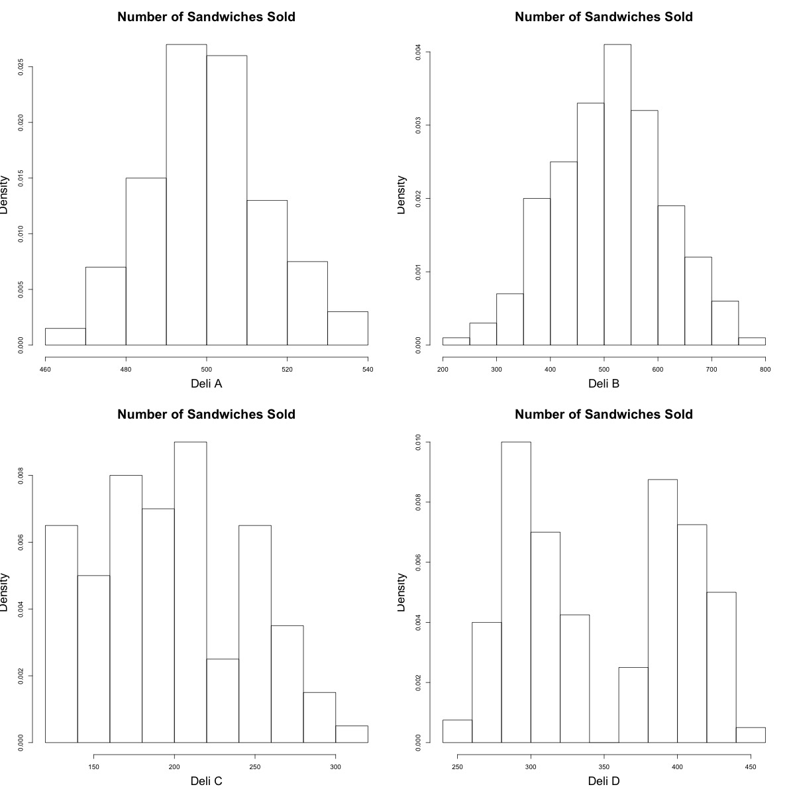
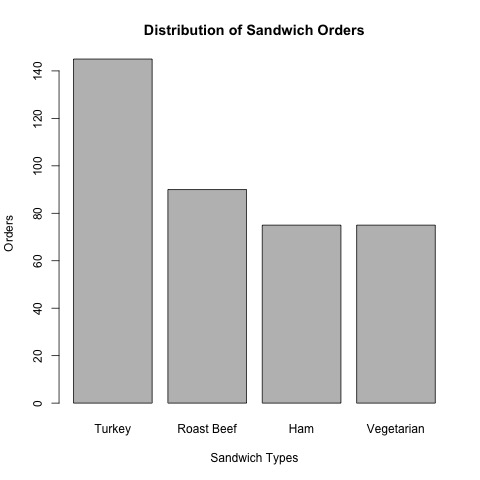
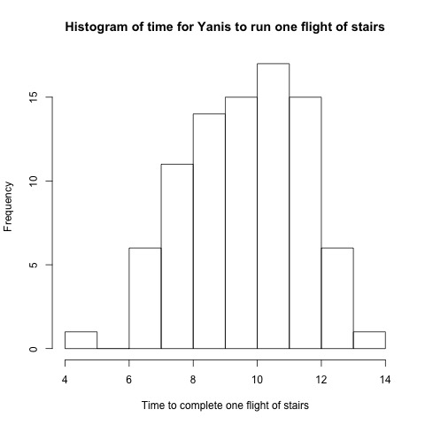
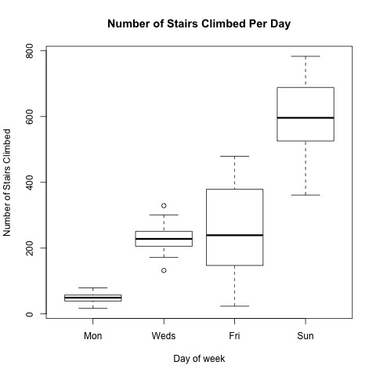
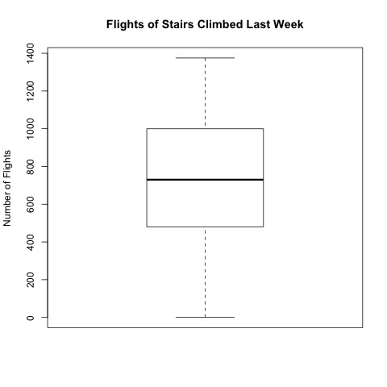

这里是 week 2-3 的笔记，来看看箱型图是什么样子的吧，然后再做个测验就要结束week2啦
Start with Me | Coursera - Understanding and Visualizing Data with Python week 2-3 - boxplot and quiz
Quantitative Data : Boxplots
What is a Boxplot?
Five Number Summary
Min
Q1
Median
Q3
Max
Boxplot is basically going to take this five number summary and give a visual picture of it.
A boxplot would be started by taking our quartiles Q1 and Q3 to form the edge of the boxes.
the length of the box is our interquartile range, a nice measure of spread
the median location would be marked in the middle of the box at the right location
the min and max would be drawn by taking lines and extending them out from the box, these are sometimes called whiskers
Boxplots can help identify outliers
Boxplots can hide gaps and clusters
Boxplots are useful for comparing sets of observations
数值数据 ： 箱线图
数值摘要：
- 最小值
- 第一四分位数
- 中位数
- 第三四分位数
- 最大值
中位数 - 中心
两个四分位数Q1、Q3 - IQR
Q1、Q3之间的距离提供了中间50%的数据，用于衡量数据中间50%的分布情况
最大值和最小值 - 全距
数据的整体范围
箱线图
将五个数值摘要可视化
- 一个箱线图会从Q1、13开始，形成box的边缘
- box的长度就是四分位数的范围
- 中位数的位置会被标记在box中间的位置
- 最大值和最小值会通过从box中延伸出来来绘制，有时候被称为胡须
成年男子的身高
- 数值摘要：
- Min : 61.7
- Q1 : 66.5
- Median : 68.3
- Q3 : 70.1
- Max : 75.1
- box 长度 = IQR = Q3 - Q1 = 3.6
- box 中心 = Median = 68.3
- box min = 61.7
- box max = 75.1
收缩压
这个分布不是对称的，是右偏的
箱线图的右边显示了血压的几个特别大的异常值，即离群值
箱线图可以识别离群值
考试分数

- 可以看出有一些学生考试的成绩很好，有一些学生成绩不太好，而中间没有人
- 由小数据集制成的箱型图，仍然是一个box
- 从箱型图中并不能看出数据集中间是有间隔的，而且有几个群
- 箱线图的缺点：不能看到分布的形状的一些特征
多个箱线图
年龄
年龄越大，血压越高，离差越大
性别
相比较来说，年轻女士的血压比年轻男士的血压低；年长女士的血压比年长男士的血压高
箱线图对于观测数据集的比较非常有用
总结
- 箱线图提供了一个非常漂亮的五位数值摘要的图形
- 通过中位数展示了中心点
- 通过四分位数范围，即盒子的长度，以及全距来衡量离散程度
- 可以识别潜在的异常值、离群值
- 隐藏了分布的形状的一些特征，这方面直方图更好
- 有两组或更多的观测值时，并排显示箱线图对于比较很有用
Practice Quiz : Summarizing Graphs in Words
The following graphs show the distributions for number of sandwiches sold per day at delis managed by the same owner and in the same region. Match these graphs to the appropriate sentence describing them.
 A. The number of sandwiches sold is bimodal with peaks around 300 and 400. The number of sandwiches vary from around 250 to around 450. There do not appear to be outliers.
B. The number of sandwiches sold is slightly skewed left and unimodal, with a center around 500 and a range from around 200 to around 800. There do not appear to be outliers.
C. The number of sandwiches sold is skewed right with a peak around 200. The number of sandwiches vary from around 125 to around 325. There do not appear to be outliers.
D. The number of sandwiches sold has a bell shaped distribution, with a peak around 500 and with values varying from around 460 to around 540. There do not appear to be outliers.
- Which of these statements best summarizes Deli A?
- Which of these statements best summarizes Deli B?
- Which of these statements best summarizes Deli C?
- Which of these statements best summarizes Deli D?
- Which Deli has the smallest range?
A. Deli A
B. Deli B
C. Deli C
D. Deli D
E. Can't tell
- Which is larger for Deli C?
A. The mean
B. The median
C. They are the same
D. Can't tell
The following graph shows the service time for customers at five delis.

What approximate proportion of customers are waiting for more than 12 minutes for their sandwich at Deli A?
A. 25%
B.30%
C.50%
D.75%
Which deli's service time distribution has the smallest mean?
A. Deli A
B. Deli B
C. Deli C
D. Deli D
E. Deli E
Which deli's service time distribution has the smallest median?
A. Deli A
B. Deli B
C. Deli C
D. Deli D
E. Deli E
F. Can't tell
What kind of distribution does Deli A's service time follow?
A. Normal
B. Skewed right
C. Uniform
D. Can't tell
The manager is also interested in looking at the distribution of the types of sandwiches ordered before placing the next order for food supplies.

Which is the distribution shape of the types of sandwiches ordered?
A. Uniform
B. Normal
C. Skewed right
D. Skewed left
E. Can't tell
Which type of sandwich is ordered the most?
A. Turkey
B. Roast Beef
C. Ham
D. Vegetarian
E. Can't tell
参考答案：
D
B
C
A
A
A
C
C
C
D
We can't see the underlying distribution from a box plot. We can only see five numbers and any outliers rather than being able to see the entire distribution.
D
Because the type of sandwich ordered is a categorical variable, we can not label the distribution type. Would this graph still make sense if we rearranged the bars? Would the shape be the same if we rearranged them?
A
Assessment : Numerical Summaries
Yanis is training for a stair climbing competition. He's interested in information from his training and those of his competitors. For his most recent training session, Yanis kept track of the time to complete each flight of stairs (16 steps). His distribution is shown here.

Which will be larger of time to complete each flight of stairs: the mean or the median?
A. The mean
B. The median
C. They are the same
D. Can't tell
Yanis trains by climbing stairs 4 days out of the week. These box plots show the distribution of the number of flights of stairs climbed during his workouts for the past year.

Which day of the week has the largest third quartile?
A. Monday
B. Wednesday
C. Friday
D. Sunday
E. Can't tell
Which day has the largest IQR？
A. Monday
B. Wednesday
C. Friday
D. Sunday
E. Can't tell
Yanis is able to see how many flights of stairs his competitors climb in a week. The box plot shows the distribution of the flights of stairs climbed by his competitors over the last week. Yanis climbed 1375 flights of stairs last week.

Approximately what proportion of competitors climbed more flights of stairs than Yanis?
A. 50%
B. 30%
C. 25%
D. 10%
E. 0%
F. Can't tell
参考答案：
B
Since this distribution is skewed left, the mean will be pulled to the right while the median remains larger.
D
The third quartile, which is represented by the top of the box, is the highest for Sunday.
C
The IQR is represented by the length of the box. The box for Friday is the widest.
E
The maximum is represented by the top of the whisker in this boxplot. The maximum appears to be around 1375, the number of flights of stairs climbed by Yanis. Thus, approximately 0% seem to have climbed more flights of stairs than Yanis in this week.
本博客所有文章除特别声明外，均采用 CC BY-SA 4.0 协议 ，转载请注明出处！